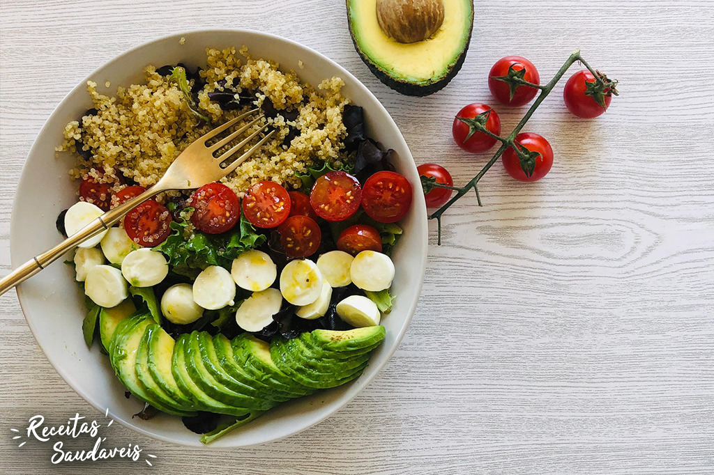

Salada de Quinoa com Abacate e Legumes

Salada refrescante e nutritiva de quinoa com abacate e legumes.
Ingredientes:
- 1 xícara de quinoa cozida
- 1 abacate cortado em cubos
- 1 cenoura ralada
- 1 pepino picado
- Tomate-cereja a gosto
- Suco de 1 limão
- Azeite de oliva
- Sal e pimenta-do-reino a gosto
Modo de Preparo:
- Cozinhe a quinoa conforme as instruções da embalagem e deixe esfriar.
- Em uma tigela, misture a quinoa, o abacate, a cenoura, o pepino e o tomate-cereja.
- Tempere com suco de limão, azeite, sal e pimenta a gosto.
- Sirva imediatamente ou leve à geladeira por alguns minutos antes de servir.